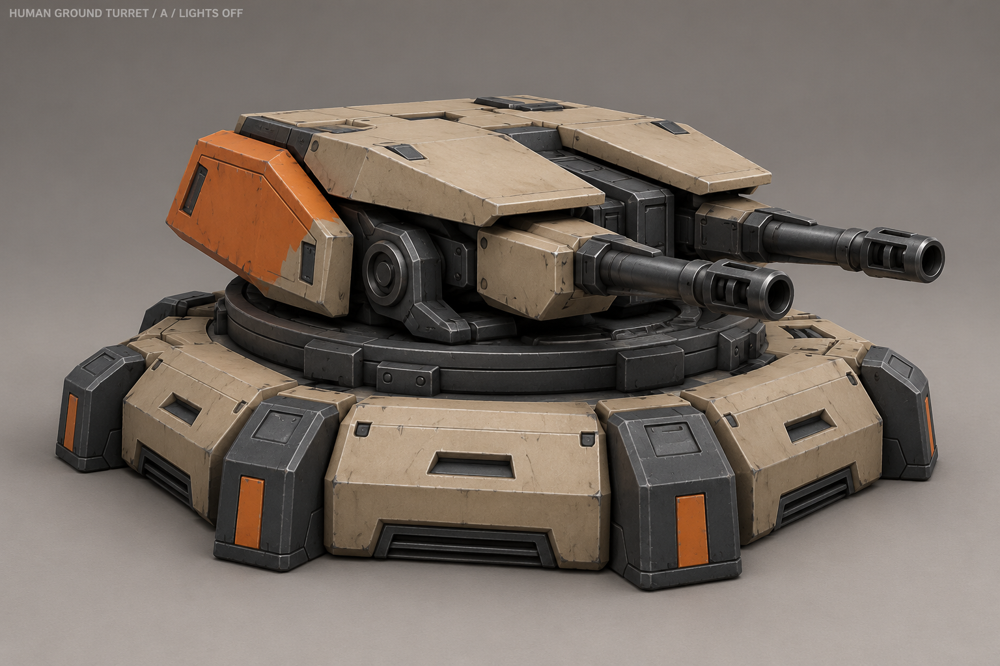
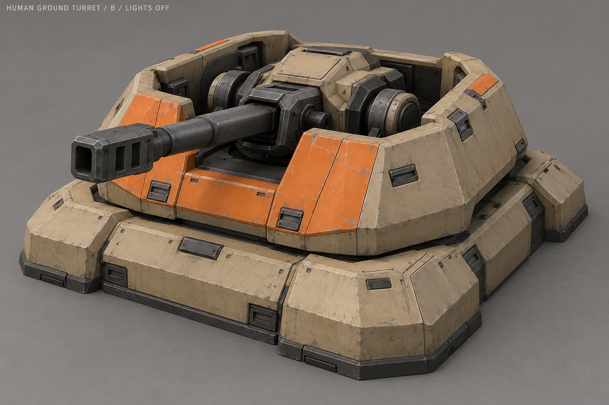
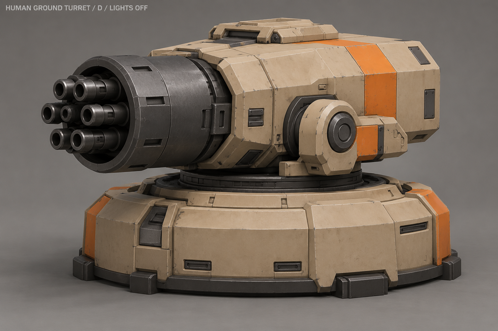
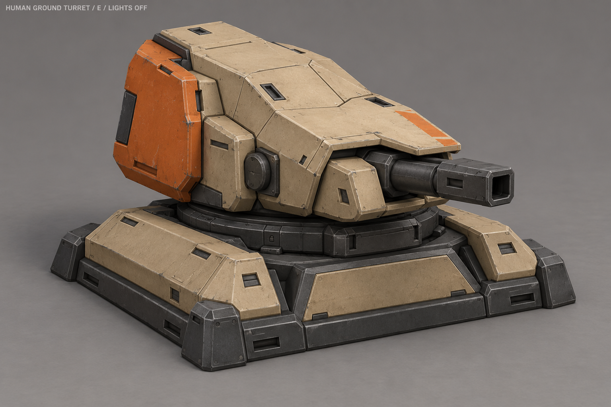
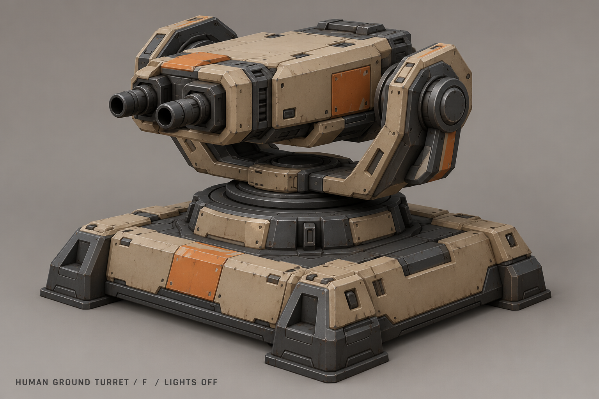
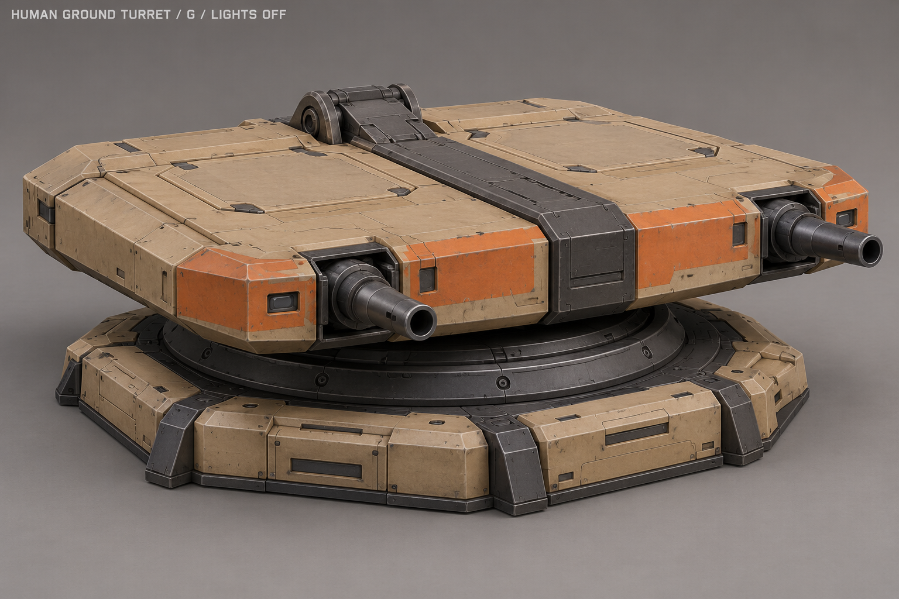

A «Низкий спаренный»

Низкая широкая спаренная установка с плоским щитом.
Наведение и стрельба — отдельно
Поворот общей платформы, наклон люльки и короткая отдача стволов.
Условная общая схема поворота и отдачи, не точный риг выбранной модели. Без цели нет постоянной производственной анимации.
B «Колодец»

Утопленная одноствольная установка внутри низкого защитного борта.
Наведение и стрельба — отдельно
Наведение внутри защитного кольца и отдача ствола.
Условная общая схема поворота и отдачи, не точный риг выбранной модели. Без цели нет постоянной производственной анимации.
C «Боковой щит»

Асимметричный боковой щит и длинный открытый ствол.
Наведение и стрельба — отдельно
Щит поворачивается вместе с установкой; ствол наводится и откатывается.
Условная общая схема поворота и отдачи, не точный риг выбранной модели. Без цели нет постоянной производственной анимации.
D «Роторный блок»

Короткий роторный блок в массивном кожухе.
Наведение и стрельба — отдельно
Вращение блока стволов при стрельбе, поворот и наклон установки.
Условная общая схема поворота и отдачи, не точный риг выбранной модели. Без цели нет постоянной производственной анимации.
E «Ломаный бронекожух»

Закрытый ломаный бронекожух с коротким тяжёлым стволом.
Наведение и стрельба — отдельно
Поворот кожуха, наклон внутренней люльки и отдача.
Условная общая схема поворота и отдачи, не точный риг выбранной модели. Без цели нет постоянной производственной анимации.
F «Открытая люлька»

Открытая механическая люлька с двумя широкими боковыми щеками.
Наведение и стрельба — отдельно
Люлька поворачивается, оружейная кассета наклоняется и даёт отдачу.
Условная общая схема поворота и отдачи, не точный риг выбранной модели. Без цели нет постоянной производственной анимации.
G «Плоская кассета»

Очень плоская широкая оружейная кассета на низком погоне.
Наведение и стрельба — отдельно
Общее наведение кассеты и отдача двух разнесённых стволов.
Условная общая схема поворота и отдачи, не точный риг выбранной модели. Без цели нет постоянной производственной анимации.